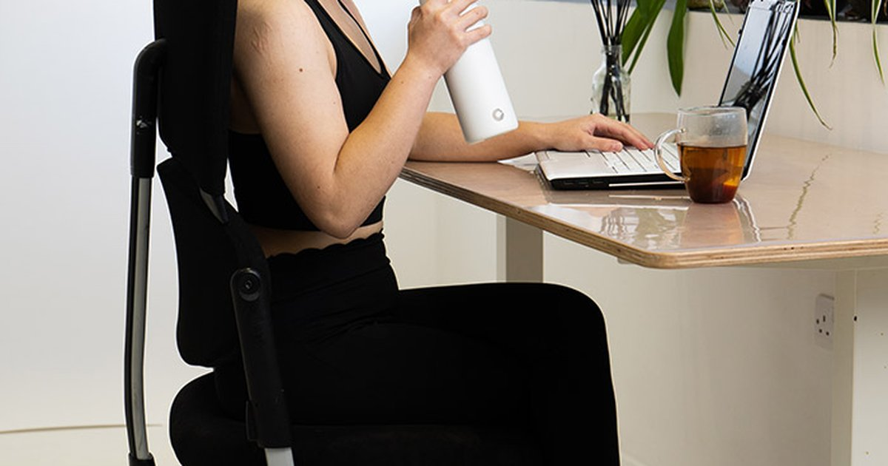

You know that feeling around 2 PM when your mouth is dry, your head is heavy, and the only thing you want is a nap? That’s not just the post-lunch slump. That’s dehydration creeping in because you’ve been staring at a screen for six hours and forgot to drink anything. I’ve been there. Most of my clients have been there. The office is a hydration graveyard. Air conditioning dries you out, coffee runs replace water breaks, and the bathroom is just far enough that you avoid going too often. But you can fix it without chugging gallons of water and running to the bathroom every 20 minutes. Here are 20 low‑calorie hydration hacks for office workers. No expensive equipment. No weird diets. Just small changes that add up. Hack one is to keep a 1‑liter bottle on your desk. Not a tiny cup. A big bottle with a straw. Research shows that people drink more when they use a straw and when the container is visible. A 1‑liter bottle also gives you a visual target. Finish it by lunch. Refill. Finish by 5 PM. That’s 2 liters right there. I use a glass bottle with time marks. 8 AM, 10 AM, noon, 2 PM, 4 PM. When I see that I’m behind the line, I take a few extra sips. Hack two is to set a phone reminder for every hour. Just a simple buzz. Don’t make it annoying or you’ll ignore it. I set mine for the top of the hour. When it goes off, I take 4‑5 swallows. That’s about 150‑200 mL (5‑7 ounces). Over an 8‑hour workday, that’s 1.2‑1.6 liters (40‑54 ounces). That’s most of your goal right there. Hack three is to drink one glass of water before every meeting. Doesn’t matter if the meeting is 5 minutes or 2 hours. Before you walk in, drink 250 mL (8 ounces). If you have 4 meetings a day, that’s 1 liter. Pairing hydration with an existing habit makes it automatic. Hack four is to use a marked water bottle. You can buy one or make your own. Use a marker to write the hours on a clear bottle. The visual feedback works. I have a client who uses a rubber band on her bottle. She moves it down as she drinks. When the rubber band hits the bottom, she knows she’s done. Hack five is to keep a glass of water at your elbow at all times. Not a bottle in your bag. Not a cup on the filing cabinet. Right next to your mouse hand. The friction of reaching for it is low. You’ll drink without thinking. Hack six is to infuse your water with flavor without adding calories. Lemon, cucumber, mint, ginger, berries, orange slices. Let them sit in a pitcher overnight. The water tastes like something, but it’s still “the baseline.” No sugar. No artificial sweeteners. One of my clients uses frozen fruit as ice cubes. By the time they melt, the water is flavored. Hack seven is to replace your afternoon coffee with herbal tea. Coffee has a BHI of 0.98, so it’s not bad. But it also has caffeine, which can disrupt sleep if you drink it too late. Herbal tea has no caffeine and a BHI close to 1.0. Plus, the ritual of making tea gets you out of your chair. A mug of peppermint or chamomile tea at 3 PM can be just as satisfying as coffee. Hack eight is to eat your water. Keep a bowl of cucumber slices, cherry tomatoes, or watermelon chunks at your desk. Eating 200 grams (7 ounces) of cucumber gives you about 190 mL (6.4 ounces) of fluid, plus fiber and crunch. It’s a snack and a drink in one. Hack nine is to use an app that tracks your intake. I mentioned this in the smart bottle article. WaterMinder, Suu, or even just a checkmark on a sticky note. The feedback loop works. When you see your streak, you want to keep it going. Hack ten is to drink 500 mL (17 ounces) first thing when you arrive at work. Before you check email. Before you talk to anyone. Just fill your bottle and drink. That’s 20% of your daily goal done before you’ve even started working. I do this every day. My bottle is the first thing I touch after my laptop. Hack eleven is to use a straw. Studies show that people drink about 25% more when using a straw. It’s a psychological thing. The straw makes sipping easy. You don’t have to tilt your head back. Keep a reusable straw in your desk drawer. Hack twelve is to log your drinks in a shared channel. A client of mine has a Slack channel with three coworkers. They each post a water emoji every time they finish a bottle. The peer pressure is gentle but effective. Nobody wants to be the only one not posting. Hack thirteen is to drink 500 mL before every meal. Not during. Before. You’ll feel fuller and eat less, plus you’ll hit your hydration goal. If you eat three meals a day, that’s 1.5 liters (51 ounces) right there. Hack fourteen is to turn your water bottle into a fidget toy. Some bottles have spinning lids or flipping straws. The act of opening and closing becomes a habit. You’ll drink just because you’re fiddling. I have a client who uses a bottle with a carabiner clip. She clicks it all day. Hack fifteen is to add a pinch of salt to your morning bottle. If you’re a salty sweater or if you work in a dry office, that little bit of sodium helps your body hold onto the water. You won’t run to the bathroom as often. One pinch is about 200‑300 mg of sodium. It doesn’t make the water taste salty. Just balanced. Hack sixteen is to use a smaller cup. This sounds backwards, but a smaller cup encourages you to get up more often. The act of walking to the water cooler and refilling gives you a movement break. Standing up every hour is good for your back and your hydration. Hack seventeen is to drink sparkling water instead of soda. The bubbles provide the same satisfaction, and the BHI of sparkling water is 1.0 — same as still water. If you’re craving a Diet Coke, try a can of plain seltzer first. You might find that the fizz was what you really wanted. Hack eighteen is to keep a hydration log on your whiteboard. If you have a personal whiteboard or a sticky note on your monitor, draw a grid. Each time you finish a bottle, put a checkmark. By 5 PM, you should have a certain number of checks. The visual feedback is powerful. Hack nineteen is to drink 250 mL (8 ounces) every time you use the bathroom. This creates a cycle. Pee, then drink. Pee, then drink. It sounds weird, but it works. Your body is telling you that it just flushed out fluid. Replace it immediately. Hack twenty is to leave yourself a note on your keyboard. A sticky note that says “DRINK” in big letters. Put it right under your space bar. Every time you type, you’ll see it. That visual cue is impossible to ignore. I had a client named Priya who worked in a high‑pressure finance job. She had no time for hydration. She would go from 8 AM to 3 PM without drinking anything except coffee. Her headaches were constant. Her skin was dry. She was exhausted. She tried a few of these hacks and found that the best combo for her was a 1‑liter bottle on her desk, a phone reminder every hour, and a bowl of cucumber slices at her elbow. Within two weeks, her headaches stopped. She said she had more energy in the afternoons than she’d had in years. The office environment is uniquely bad for hydration. Air conditioning pulls moisture out of the air and out of your body. Artificial lights trick your circadian rhythm so you don’t feel tired or thirsty at the right times. The social pressure to stay at your desk means you skip water breaks. And the free coffee is always there, calling your name. But you can fight back with small changes. You don’t need to drink 4 liters. You just need to drink consistently. The tools I recommend for office workers are simple. The Daily Water Intake Calculator gives you a goal.Daily Water Intake Calculator
Enter your weight, climate (office AC counts as dry), and activity. Get your personalized goal.
All data stays in your browser — we never see it.
Hydration Goal Setter
Set your working hours. The app won’t bother you at night, but it will buzz you every hour from 9 to 5.
All data stays in your browser — we never see it.
Beverage Hydration Index Tool
See how your afternoon latte compares to plain water. Spoiler: it’s close, but water wins.
All data stays in your browser — we never see it.